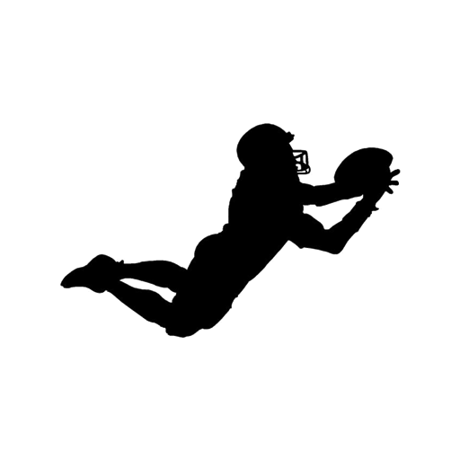

<ion-header [translucent]="true">
  <ion-toolbar>
    <ion-buttons slot="start">
      <ion-button fill="clear" shape="round" routerLink="/home">
        <ion-icon slot="icon-only" name="chevron-back-outline"></ion-icon>
      </ion-button>
    </ion-buttons>
    <ion-title class="ion-text-right">
      <ion-badge color="warning" style="font-size:x-small;text-transform:uppercase;"> Femenil libre </ion-badge><br/>
      <ion-badge color="success" style="font-size:x-small;"> Campo 2 </ion-badge> / <ion-badge color="success" style="font-size:x-small;"> Jornada 6 </ion-badge>
    </ion-title>
    <ion-buttons [collapse]="true" slot="end">
      <ion-button fill="clear" shape="round" routerLink="/cronome">
        
      </ion-button>
    </ion-buttons>
  </ion-toolbar>

  <ion-segment [value]="equipo" [(ngModel)]="equipo" mode="ios" (ionChange)="fncChangeTeam();">
    <ion-segment-button value="visitante">
      
      <ion-badge style="font-size:large;">{{sVisitante}}</ion-badge>
      <ion-label style="font-size:x-small;text-transform:uppercase;">Azur</ion-label><br/>
    </ion-segment-button>
    <ion-segment-button value="local">
      
      <ion-badge style="font-size:large;">{{sLocal}}</ion-badge>
      <ion-label style="font-size:x-small;text-transform:uppercase;">Amazonas renegados</ion-label><br/>
    </ion-segment-button>
  </ion-segment>

  <ion-segment [value]='down' [(ngModel)]='down' mode="ios" (ionChange)="fncChangeDown();">
    <ion-segment-button value="0">
      <ion-label>kickoff</ion-label>
    </ion-segment-button>
    <ion-segment-button value="1">
      <ion-label>1 down</ion-label>
    </ion-segment-button>
    <ion-segment-button value="2">
      <ion-label>2 down</ion-label>
    </ion-segment-button>
    <ion-segment-button value="3">
      <ion-label>3 down</ion-label>
    </ion-segment-button>
    <ion-segment-button value="4">
      <ion-label>4 down</ion-label>
    </ion-segment-button>
  </ion-segment>
</ion-header>

<ion-content [fullscreen]="true">

  <ion-grid>
    <ion-row>
      <ion-col size="8">
        <div id="cronometro" class="ion-text-center">
          {{tiempo}}
        </div>
      </ion-col>
      <ion-col size="4" class="ion-text-center medioActual">
        {{timeTab}}
      </ion-col>
    </ion-row>
  </ion-grid>

  <ion-fab (click)="iniciarCronometro()" class="btnPlayPause">
    <ion-fab-button>
      <ion-icon [name]="iconBottonPlayPause"></ion-icon>
    </ion-fab-button>
  </ion-fab>

  <ion-fab (click)="fncNextDown()" class="btnNextDown">
    <ion-fab-button color="success">
      <ion-icon name="add-outline"></ion-icon>
    </ion-fab-button>
  </ion-fab>

  <ion-fab (click)="fncLastDown()" class="btnLastDown">
    <ion-fab-button color="success">
      <ion-icon name="remove-outline"></ion-icon>
    </ion-fab-button>
  </ion-fab>

  <div class="btnEstadiFinales" >
    <ion-button expand="block" shape="round" size="small" (click)="estadisticasFinales();">Estadísticas finales</ion-button>
  </div>

</ion-content>

<ion-footer>
  <ion-toolbar>
    <ion-button fill="clear" (click)="goCroconfig()">
      
    </ion-button>

    <ion-button fill="clear" class="btnTochdown_2" (click)="goTowchdown()">
      
    </ion-button>

    <ion-button fill="clear" class="btnCastigo_2" (click)="goCastigos()">
      
    </ion-button>

    <ion-button fill="clear" class="btnIntercepciones_2" (click)="goIntercepciones()">
      
    </ion-button>

    <ion-button fill="clear" class="btnCaptura_2" (click)="goCaptura()">
      
    </ion-button>

  </ion-toolbar>
</ion-footer>

